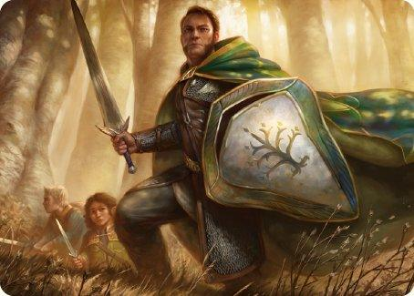

Kim są?
Boromir, syn Denethora II, władcy Gondoru, to postać, która łączy w sobie szlachetną odwagę, ambicję i tragizm. Jako dowódca wojsk Gondoru, Boromir jest jednym z kluczowych bohaterów w Władcy Pierścieni J.R.R. Tolkiena. Choć jego życie zakończyło się tragicznie, to jego historia stanowi ważną część opowieści o walce z Sauronem i losie Śródziemia. Boromir wchodzi do Drużyny Pierścienia jako reprezentant Gondoru, królestwa, które od lat zmagało się z atakami sił Mordoru. Jego rola w drużynie miała na celu ochronę Pierścienia i pomoc w jego zniszczeniu, ale Boromir, który nosił w sercu ogromną miłość i lojalność wobec swojego miasta, miał inny cel – chciał użyć Pierścienia, by ratować Gondor przed nadciągającym upadkiem. Jego wielka troska o przyszłość ojczyzny, która była stale zagrożona przez armie Saurona, staje się przyczyną wewnętrznego konfliktu i tragicznych wyborów. Boromir był nie tylko potężnym wojownikiem, mistrzem w walce mieczem, ale także człowiekiem, który nie potrafił poradzić sobie z ciężarem odpowiedzialności za los swojego ludu. Pod wpływem rosnącej presji i pragnienia ochrony Gondoru, Boromir podjął dramatyczną decyzję – próbował zabrać Pierścień Frodo Bagginsowi. Jego chęć zdobycia Jedynego Pierścienia wynikała z przekonania, że mógłby użyć go w walce z Sauronem, jednak była to decyzja, która zapoczątkowała rozpad Drużyny. Po tym, jak Boromir stracił kontrolę nad sobą, jego działania doprowadziły do dramatycznej sceny, w której samodzielnie stawił czoła grupie orków, próbując uratować Merry’ego i Pippina. Choć jego zachowanie było zrozumiałe w kontekście wewnętrznego konfliktu, to jego chwila słabości miała poważne konsekwencje dla drużyny. Boromir, mimo swojej zdrady, ostatecznie odkupił swoje winy, umierając bohaterską śmiercią. W obliczu śmierci, kiedy orki były już blisko, udało mu się zabić ich wielu, dając czas hobbitom na ucieczkę. W jego ostatnich chwilach przepełniała go żałość za swoje błędy, ale także świadomość, że nie udało mu się przejąć Pierścienia.